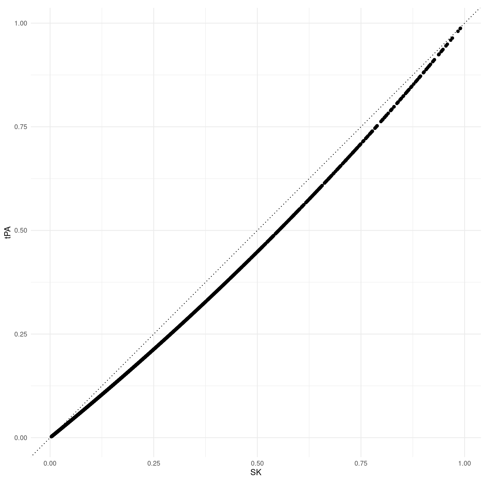
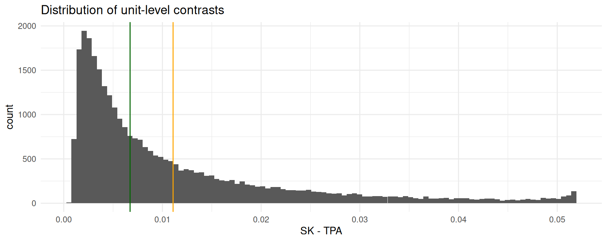

library(marginaleffects)
library(modelsummary)
library(ggplot2)
library(rms)
load(url(
"https://github.com/vincentarelbundock/modelarchive/raw/main/data-raw/gusto.rda"
))
gusto <- subset(gusto, tx %in% c("tPA", "SK"))
gusto$tx <- factor(gusto$tx, levels = c("tPA", "SK"))
mod <- glm(
day30 ~ tx + rcs(age, 4) + Killip + pmin(sysbp, 120) + lsp(pulse, 50) +
pmi + miloc + sex, family = "binomial",
data = gusto)Logit
This vignette replicates some of the analyses in this excellent blog post by Frank Harrell: Avoiding One-Number Summaries of Treatment Effects for RCTs with Binary Outcomes. Here, we show how one-number summaries and the entire distribution unit-level contrasts can be easily computed with comparisons().
Dr. Harrell discusses summaries from logistic regression models in the blog post above. He focuses on a context in which one is interested in comparing two groups, such as in randomized controlled trials. He highlights potential pitfalls of presenting “one-number summaries”, e.g., odds ratio and mean proportion difference. Finally, he recommends focusing on the entire distribution of proportion difference between groups.
For clarification, we use the following terms interchangeably in the context of logistic regression where the covariate of interest is categorical:
- Contrast
- Proportion difference
- Risk difference
- Absolute risk reduction
Data
We focus on subset data from the GUSTO-I study, where patients were randomly assigned to accelerated tissue plasminogen activator (tPA) or streptokinase (SK).
Load libraries, data and fit a covariate-adjusted logistic regression model.
One-Number Summaries
As usual, we can produce a one-number summary of the relationship of interest by exponentiating the coefficients, which yields an Odds Ratio (OR):
modelsummary(mod, exponentiate = TRUE, coef_omit = "^(?!txSK)") | (1) | |
|---|---|
| txSK | 1.230 |
| (0.065) | |
| Num.Obs. | 30510 |
| AIC | 12428.6 |
| BIC | 12553.5 |
| Log.Lik. | -6199.317 |
| F | 173.216 |
| RMSE | 0.24 |
Unlike ORs, adjusted risk differences vary from individual to individual based on the values of the control variables. The comparisons() function can compute adjusted risk differences for every individual. Here, we display only the first 6 of them:
comparisons(
mod,
variables = "tx")
#>
#> Estimate Std. Error z Pr(>|z|) S 2.5 % 97.5 %
#> 0.001074 0.000497 2.16 0.03060 5.0 0.000100 0.00205
#> 0.000857 0.000380 2.26 0.02410 5.4 0.000112 0.00160
#> 0.001780 0.000779 2.29 0.02229 5.5 0.000253 0.00331
#> 0.001137 0.000500 2.27 0.02302 5.4 0.000157 0.00212
#> 0.001366 0.000594 2.30 0.02143 5.5 0.000202 0.00253
#> --- 30500 rows omitted. See ?avg_comparisons and ?print.marginaleffects ---
#> 0.002429 0.000808 3.00 0.00266 8.6 0.000844 0.00401
#> 0.012130 0.003900 3.11 0.00187 9.1 0.004486 0.01977
#> 0.036812 0.010361 3.55 < 0.001 11.4 0.016505 0.05712
#> 0.022969 0.006975 3.29 < 0.001 10.0 0.009298 0.03664
#> 0.049707 0.012843 3.87 < 0.001 13.2 0.024535 0.07488
#> Term: tx
#> Type: response
#> Comparison: SK - tPA
#> Columns: rowid, term, contrast, estimate, std.error, statistic, p.value, s.value, conf.low, conf.high, predicted_lo, predicted_hi, predicted, day30, tx, age, Killip, sysbp, pulse, pmi, miloc, sexPopulation-averaged (aka “marginal”) adjusted risk difference (see this vignette) can be obtained using the avg_*() functions or using the by argument:
avg_comparisons(mod, variables = "tx")
#>
#> Estimate Std. Error z Pr(>|z|) S 2.5 % 97.5 %
#> 0.0111 0.00277 4.01 <0.001 14.0 0.00566 0.0165
#>
#> Term: tx
#> Type: response
#> Comparison: mean(SK) - mean(tPA)
#> Columns: term, contrast, estimate, std.error, statistic, p.value, s.value, conf.low, conf.high, predicted_lo, predicted_hi, predictedThe comparisons() function above computed the predicted probability of mortality (day30==1) for each observed row of the data in two counterfactual cases: when tx is “SK”, and when tx is “tPA”. Then, it computed the differences between these two sets of predictions. Finally, it computed the population-average of risk differences.
Instead of risk differences, we could compute population-averaged (marginal) adjusted risk ratios:
avg_comparisons(
mod,
variables = "tx",
comparison = "lnratioavg",
transform = exp)
#>
#> Estimate Pr(>|z|) S 2.5 % 97.5 %
#> 1.18 <0.001 13.3 1.08 1.28
#>
#> Term: tx
#> Type: response
#> Comparison: ln(mean(SK) / mean(tPA))
#> Columns: term, contrast, estimate, p.value, s.value, conf.low, conf.high, predicted_lo, predicted_hi, predictedPopulation-averaged (marginal) odds ratios:
avg_comparisons(
mod,
variables = "tx",
comparison = "lnoravg",
transform = "exp")
#>
#> Estimate Pr(>|z|) S 2.5 % 97.5 %
#> 1.19 <0.001 13.4 1.09 1.3
#>
#> Term: tx
#> Type: response
#> Comparison: ln(odds(SK) / odds(tPA))
#> Columns: term, contrast, estimate, p.value, s.value, conf.low, conf.high, predicted_lo, predicted_hi, predictedUnit-level Summaries
Instead of estimating one-number summaries, we can focus on unit-level proportion differences using comparisons(). This function applies the fitted logistic regression model to predict outcome probabilities for each patient, i.e., unit-level.
cmp <- comparisons(mod, variables = "tx")
cmp
#>
#> Estimate Std. Error z Pr(>|z|) S 2.5 % 97.5 %
#> 0.001074 0.000497 2.16 0.03060 5.0 0.000100 0.00205
#> 0.000857 0.000380 2.26 0.02410 5.4 0.000112 0.00160
#> 0.001780 0.000779 2.29 0.02229 5.5 0.000253 0.00331
#> 0.001137 0.000500 2.27 0.02302 5.4 0.000157 0.00212
#> 0.001366 0.000594 2.30 0.02143 5.5 0.000202 0.00253
#> --- 30500 rows omitted. See ?avg_comparisons and ?print.marginaleffects ---
#> 0.002429 0.000808 3.00 0.00266 8.6 0.000844 0.00401
#> 0.012130 0.003900 3.11 0.00187 9.1 0.004486 0.01977
#> 0.036812 0.010361 3.55 < 0.001 11.4 0.016505 0.05712
#> 0.022969 0.006975 3.29 < 0.001 10.0 0.009298 0.03664
#> 0.049707 0.012843 3.87 < 0.001 13.2 0.024535 0.07488
#> Term: tx
#> Type: response
#> Comparison: SK - tPA
#> Columns: rowid, term, contrast, estimate, std.error, statistic, p.value, s.value, conf.low, conf.high, predicted_lo, predicted_hi, predicted, day30, tx, age, Killip, sysbp, pulse, pmi, miloc, sexShow the predicted probability for individual patients under both treatment alternatives.
ggplot(cmp, aes(predicted_hi, predicted_lo)) +
geom_point() +
geom_abline(slope = 1, intercept = 0, linetype = 3) +
coord_fixed() +
labs(x = "SK", y = "tPA")
We can present the entire distribution of unit-level proportion differences an a cumulative distribution function:
Or the same information as a histogram with the mean and median.
ggplot(cmp, aes(estimate)) +
geom_histogram(bins = 100) +
geom_vline(xintercept = mean(cmp$estimate), color = "orange") +
geom_vline(xintercept = median(cmp$estimate), color = "darkgreen") +
labs(x = "SK - TPA", title = "Distribution of unit-level contrasts")
Appendix
comparisons() performed the following calculations under the hood:
The original dataset contains 30510 patients, thus comparisons() generates an output with same amount of rows.
nrow(gusto)
#> [1] 30510nrow(cmp)
#> [1] 30510